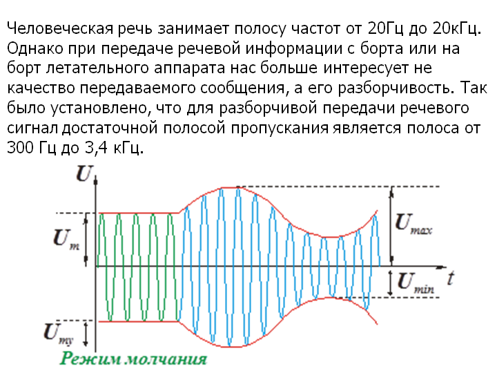
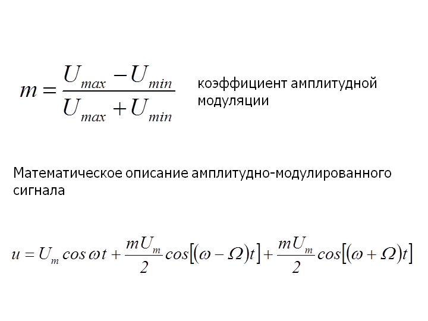
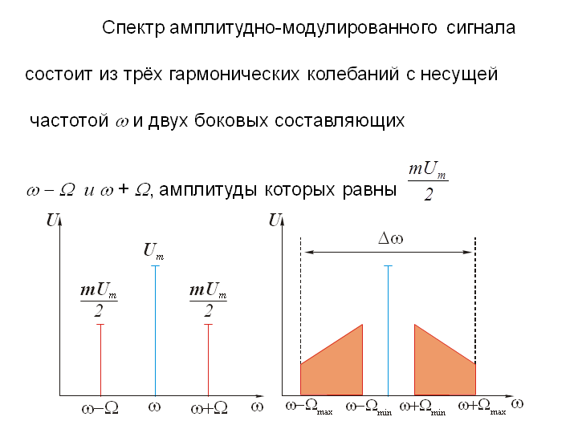
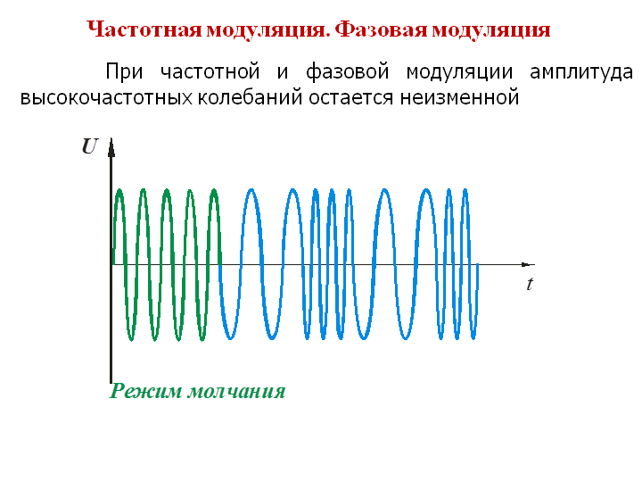
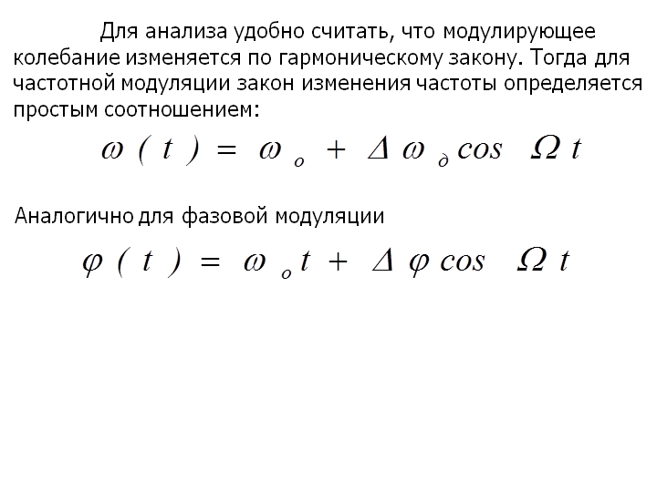
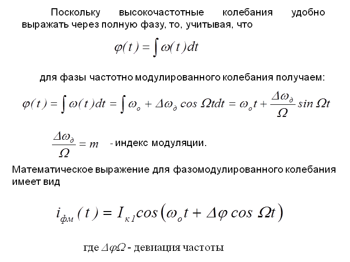
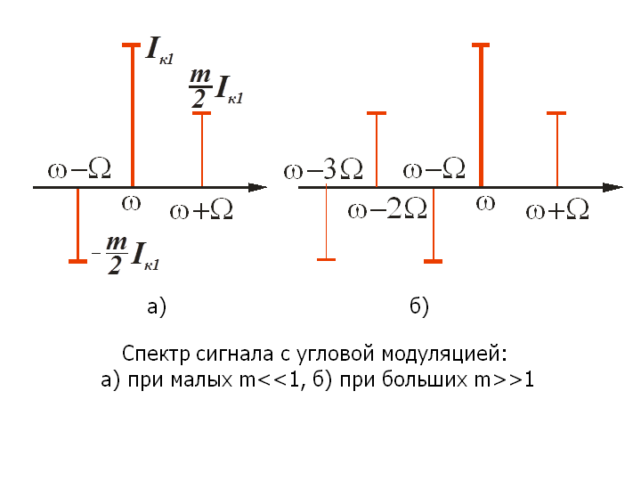

Общие сведения об аналоговых системах связи. Амплитудная модуляция. Частотная модуляция. Фазовая модуляция.
Для того, чтобы сформированная в радиопередающем устройстве несущая была полезна на приемной стороне ее необходимо наделить полезной информацией или другими словами промодулировать.
Определение. Модуляцией называется процесс изменения одного или нескольких параметров несущего колебания по закону передаваемого сигнала или других сигналов воз-действующих на нее.
Передаваемым сигналом может быть, например, речь, а другим, одновременно воздействующим шум.
Для осуществления модуляции используется электрический аналог сигнала, подлежащего передаче, который поступает с соответствующего датчика или преобразователя. Например, преобразователем речевого сигнала в электрический является широко известный микрофон.
Модуляция может осуществляться как аналоговым сигналом, так и его дискретными значениями – импульсами. При определенных условиях в радиоприемнике по дискретным значениям восстанавливается аналоговый сигнал. Помимо дискретизации передаваемый сигнал может быть определенным образом видоизменен или закодирован для скрытности от радиоразведки противника.
В зависимости от того какой параметр несущего колебания изменяется различают амплитудную (АМ), частотную (ЧМ), фазовую (ФМ), однополосную (ОМ), импульсную (ИМ), фазоразностную (ФРМ) модуляции. Следует отметить, что импульсная модуляция является частным случаем амплитудной модуляции.
Рассмотрим каждую из отмеченных видов модуляции в отдельности.
Амплитудная модуляция.
Амплитудная модуляция используется в радиотелефонной связи для передачи речевых сообщений, в телевидении для передачи сигналов изображения, а также в ряде навигационных и радиолокационных устройств.
Определение. Амплитудной модуляцией называется процесс изменения амплитуды высокочастотных колебаний по закону модулирующего (передаваемого) сигнала.
В общем случае модулирующий сигнал является случайной функцией и теоретически имеет бесконечно широкий спектр. Однако на практике полоса, занимаемая модулирующим сигналом, ограничена и лежит в пределах от Ωмин…Ωмакс. Ширину этой полосы определяют на этапе разработки радиотехнического устройства и стремятся сделать как можно меньше, так как от этого зависит количество образуемых каналов.
Человеческая речь занимает полосу частот от 20Гц до 20кГц. Однако при передаче речевой информации с борта или на борт летательного аппарата нас больше интересует не качество передаваемого сообщения, а его разборчивость. Так было установлено, что для разборчивой передачи речевого сигнал достаточной полосой пропускания является полоса от 300 Гц до 3,4 кГц.
